Efficient Visual Pointing for Embodied AI
Agent-Driven Data Synthesis · AttnRes Fine-Tuning · Iterative Correction · Molmo2-8B
Three Bottlenecks
1. Data Scarcity
Steerable has ZERO public training data.
→ 55K processed, 37.6K trainable
2. Architecture Gap
Standard LoRA weakly couples coords with semantics.
→ AttnRes: cross-block attention
3. One-Shot Prediction
Single forward pass, no recovery.
→ Correction-based training
Molmo2-8B Zero-Shot
| Model | Afford. | Spatial | Reason. | Counting | Steer. | Overall |
|---|---|---|---|---|---|---|
| Molmo2-8B | 85.9% | 76.9% | 77.2% | 73.0% | 50.5% | 72.7% |
Agent-Driven Data Synthesis Pipeline
Gemini API: 4-Stage Agent — Real Sample Trace + Per-Stage Images
Sample: "Point to the sign." (source_rank=320928, gemini-3-flash-preview-thinking). Image+data merged per stage below.
Per-Stage Visualization — "Point to the DOG NOSE." (Object Reference → rewritten)
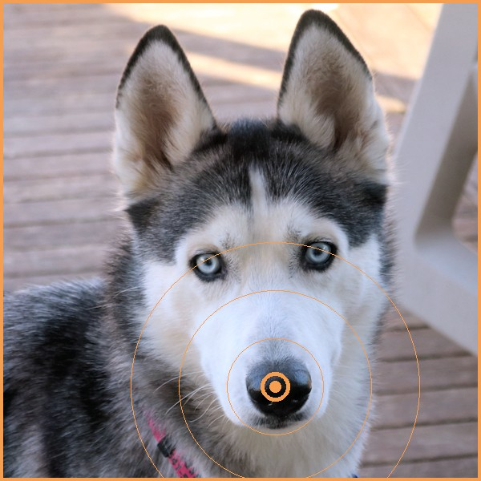
STAGE 0 — Raw Input
Query: "Point to the DOG NOSE."
Label: "DOG NOSE"
Point: (x, y) pixel coordinates
Source: pixmo_points dataset
Status: Unprocessed raw record — enters the 4-stage Agent pipeline
🔍 Orange circle with radar rings = search/scan context
STAGE 1 — Gatekeeper
Decision: KEEP (keep=true)
Core target: "the dog nose"
Rule 1: Must be a pointing task (GROUNDING) — ✓
Rule 2: Reject pure QA (text answers) — not applicable
Rule 3: Accept empty/free space pointing — not applicable
Rule 4: Accept logical pointing — not applicable
🟢 Green bounding box + "TARGET LOCKED" = validated and kept
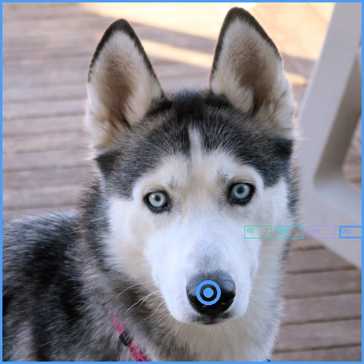
STAGE 2 — 5-Way Classification
Category: Object Reference
Thought: "The task is a straightforward request to point to a specific named object without any spatial, functional, or quantitative constraints."
5 classes: Affordance | Spatial Relation | Reasoning | Object Reference | Counting
Method: Evaluates cognitive bottleneck, not surface keywords
Model: gemini-3-flash-preview-thinking · prompt_tokens=457
🔵 Blue point + 5 category chips (ObjRef highlighted) = classification result
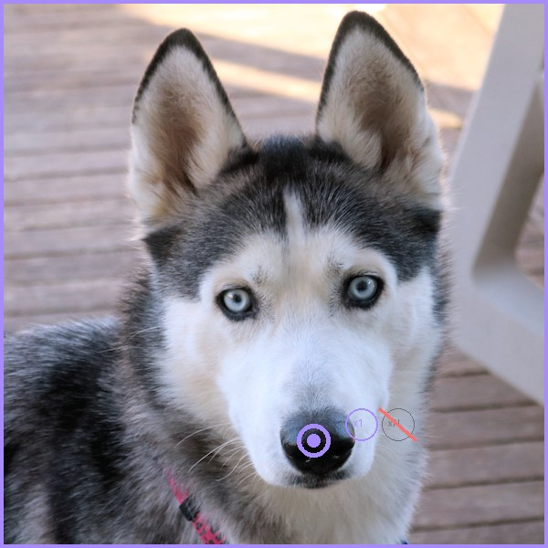
STAGE 3 — Multipoint Detection
Result: single_point = TRUE
Reason: "The instruction refers to a singular specific object ('the dog nose') and does not request multiple points, spots, or all instances."
Multi triggers: all / several / each / every / multiple / free space
This sample: Unambiguous single target — no multi-instance language
🟣 Purple x1 marker + crossed-out xN = single-point confirmed
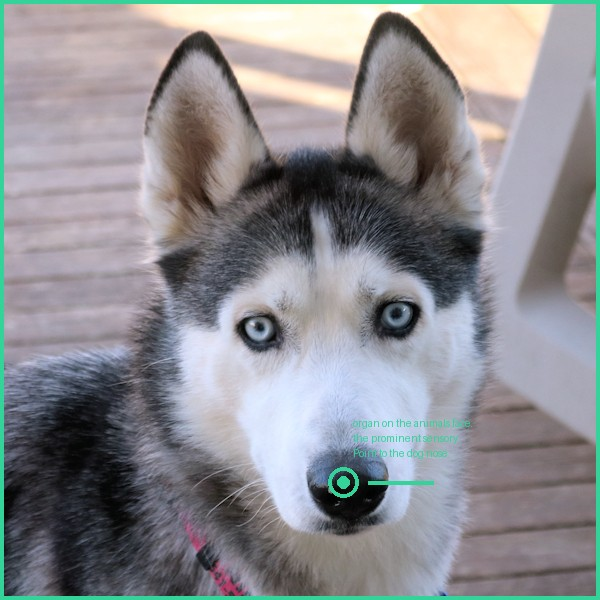
STAGE 4 — Rewrite
Output: "Point to the dog's nose — the prominent sensory organ on the animal's face."
Method: Category-specific REWRITE_PROMPTS["Object Reference"] applied
Effect: Preserves object identity while enriching with semantic description
Affordance: Would add interaction/usage cues ("where you would grip...")
Reasoning: Would add world-knowledge context ("the uppermost body part...")
🟢 Green text = rewritten output with category-specific enrichment applied
10 Balanced Samples — Skill-Based Rewrites (3 Aff + 3 Spatial + 1 Reason + 3 ObjRef)
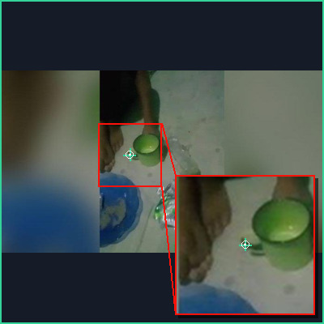
→ Point to the place for holding a coffee cup — the recessed area in the lid designed for st
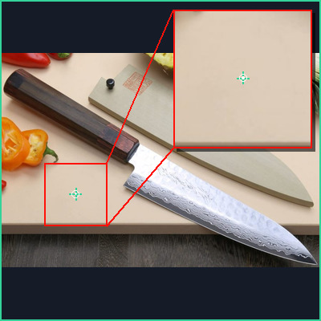
→ Point to the surface intended for cutting — the flat preparation area suitable for slicing
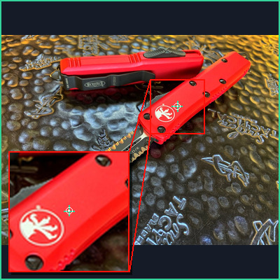
→ Point to the knife handle — the gripping part of the kitchen tool designed for safe holdin
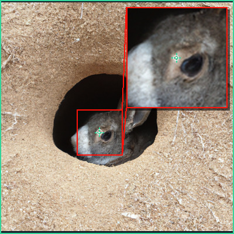
→ Point to the bare area located directly in front of the rabbit's left eye — the exposed sk
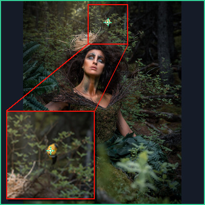
→ Point to the yellow bird positioned on top of the head — the small decorative figure situa
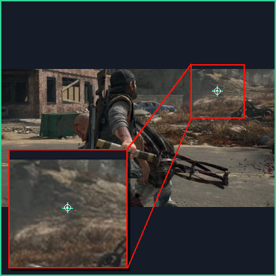
→ Point to the rock situated on the ground surface — the geological object positioned below
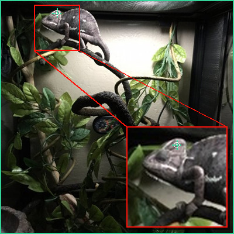
→ Point to the head — the uppermost anatomical structure of the human body, identified as th
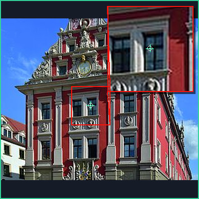
→ Point to the window — the specific text field on the form where a
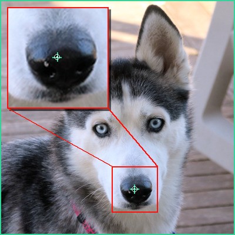
→ Point to the dog's nose — the prominent sensory organ visible on the animal's face, identi
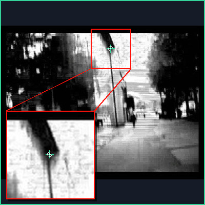
→ Point to the sign — the specific information board shown in the image, recognizable by its
10-Sample Data Table — Rewrite Applied per Category Skill
| # | Query | Label | Gatekeeper | Category | Multi | Rewrite (skill-based) |
|---|---|---|---|---|---|---|
| 1 | Point to the place to hold coffee cup. | place to hold coffee | keep=true | Affordance | false | Point to the place for holding a coffee cup — the recessed area in the |
| 2 | Point to the area for cutting. | area for cutting | keep=true | Affordance | false | Point to the surface intended for cutting — the flat preparation area |
| 3 | Point to the handle where you would hold the knife. | handle where you wou | keep=true | Affordance | false | Point to the knife handle — the gripping part of the kitchen tool desi |
| 4 | Point to the Bare area in front of rabbit left eye. | Bare area in front o | keep=true | Spatial Relation | false | Point to the bare area located directly in front of the rabbit's left |
| 5 | Point to the yellow bird on top of head. | yellow bird on top o | keep=true | Spatial Relation | false | Point to the yellow bird positioned on top of the head — the small dec |
| 6 | Point to the rock. | rock | keep=true | Spatial Relation | false | Point to the rock situated on the ground surface — the geological obje |
| 7 | Point to the head. | head | keep=true | Reasoning | false | Point to the head — the uppermost anatomical structure of the human bo |
| 8 | Point to the window. | window | keep=true | Object Reference | false | Point to the window — the specific text field |
| 9 | Point to the DOG NOSE. | DOG NOSE | keep=true | Object Reference | false | Point to the dog's nose — the prominent sensory organ visible on the a |
| 10 | Point to the sign. | sign | keep=true | Object Reference | false | Point to the sign — the specific information board shown in the image, |
Rewrites follow category-specific skills from rewrite_skill.md: Affordance adds functional/interaction cues, Spatial preserves geometric relations, Reasoning adds world-knowledge context, Object Reference adds distinguishing features.
Qwen3-8B Local: 3-Class + Rules + Dedup
Same 4-stage Agent via vLLM locally. 3 classes (Affordance/ObjRef/Reasoning). 18 keyword + 14 regex rules refine output. Dedicated Counting pipeline.
10 Rule-Application Samples
| # | Input Query | 3-Class Result | Rules Triggered | Action |
|---|---|---|---|---|
| 1 | Point to the place to hold coffee cup. | Affordance | "place to hold" keyword | Keep · Dedup check |
| 2 | Point to where you would type in search bar. | Affordance | "where you would" + "type" | Keep · Dedup check |
| 3 | Point to the handle to open door. | Affordance | "handle to open" keyword | Keep · Dedup check |
| 4 | Point to all cups in the image. | Counting → None | "all" → multi-instance | Route to Counting pipeline |
| 5 | Point to the existing point + 5px right. | Object Reference | "existing point"/"cursor" | Force ObjRef (special rule) |
| 6 | Point to the direction the car is moving. | Reasoning | "direction" + "moving" | Keep · reasoning_candidate_cue |
| 7 | Point to the most likely exit. | Reasoning | "most likely" | Keep · reasoning pattern |
| 8 | Point to each person wearing a hat. | Counting → None | "each" → multi-instance | Route to Counting pipeline |
| 9 | Point to the wall. | Object Reference | — (no cue) | Keep · cross-check vs Pipe A |
| 10 | Point to the floor. | Spatial → None | spatial domain | Drop (B keeps 3 classes) |
Steerable Pipeline: 5 Sub-Types (LLM-FREE)
5 task types with distinct pipeline logic. 700 templates x 7 groups, SAM3 masks, CC path verification. The main accepted set has 10K verified samples, with a 2K reserve batch.
SAM3 Mask Generation
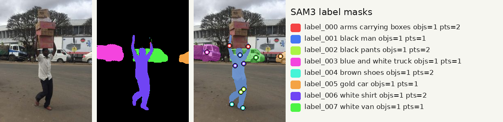
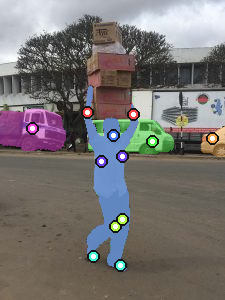
10 Steerable Samples — 2 per Sub-Type
Type 1: axis_fixed (85%)
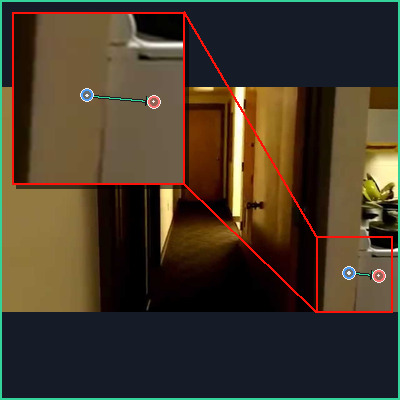
anchor=[0.873,0.826] → target=[0.946,0.838]
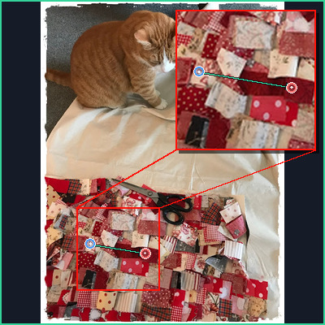
anchor=[0.204,0.751] → target=[0.429,0.779]
Type 2: nearest_among (5%)
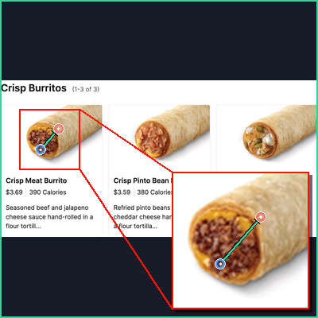
anchor=[0.128,0.443] → target=[0.184,0.311]
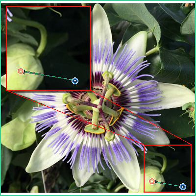
anchor=[0.931,0.953] → target=[0.775,0.926]
Type 3: nearest_axis (5%)
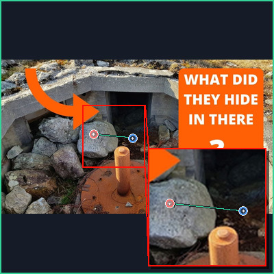
anchor=[0.484,0.510] → target=[0.342,0.485]
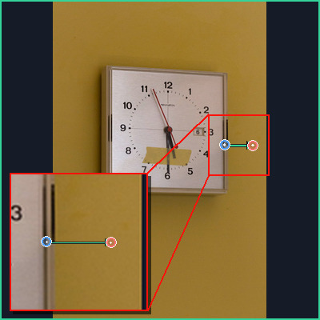
anchor=[0.803,0.453] → target=[0.936,0.454]
Type 4: then_axis (2.5%)
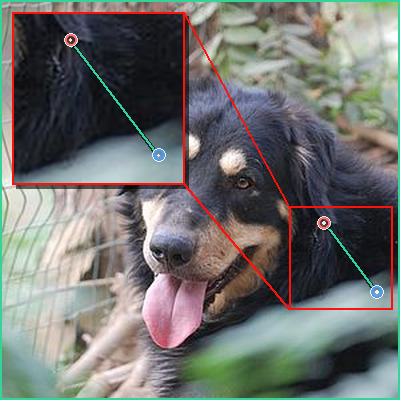
anchor=[0.942,0.730] → target=[0.810,0.557]
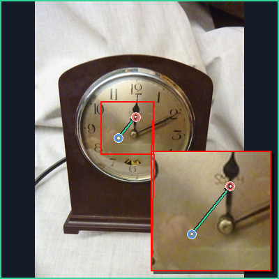
anchor=[0.401,0.495] → target=[0.482,0.419]
Type 5: from_other (2.5%)
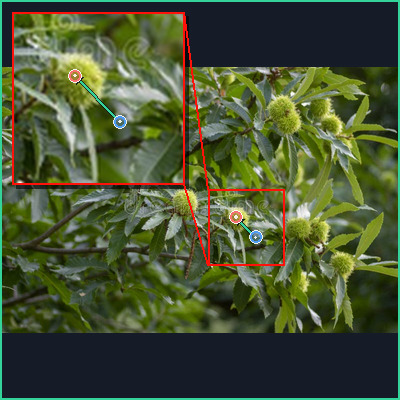
anchor=[0.639,0.641] → target=[0.590,0.564]
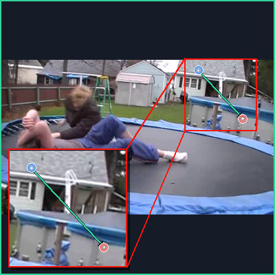
anchor=[0.722,0.068] → target=[0.883,0.381]
5 Sub-Type Pipeline Distribution
| # | Task Type | Ratio | Samples | Pipeline Logic |
|---|---|---|---|---|
| 1 | move_until_axis_fixed | 85% | 8,500 | anchor → straight direction → first target on same axis |
| 2 | nearest_among_objects | 5% | 500 | anchor → direction scan → nearest object in path |
| 3 | nearest_axis_constrained | 5% | 500 | anchor → direction + axis constraint → nearest in region |
| 4 | move_then_axis_limited | 2.5% | 250 | anchor → move step → axis-limited target search |
| 5 | move_until_from_other | 2.5% | 250 | anchor → axis from other object reference → target |
10 Steerable Samples — Data Table
| # | Task Type | Anchor | Target | Question |
|---|---|---|---|---|
| 1 | axis_fixed | [0.873,0.826] | [0.946,0.838] | Use the blue point as your reference and point to the white stove |
| 2 | axis_fixed | [0.204,0.751] | [0.429,0.779] | Take the blue point as the guide and find the quilt fabric to the |
| 3 | nearest | [0.128,0.443] | [0.184,0.311] | Using the blue point only for distance, show the nearest buritto. |
| 4 | nearest | [0.931,0.953] | [0.775,0.926] | Treat the blue point as your guide and locate the bud nearest to |
| 5 | nearest_axis_constrain | [0.484,0.510] | [0.342,0.485] | Treat the blue point as your guide and identify the nearest bould |
| 6 | nearest_axis_constrain | [0.803,0.453] | [0.936,0.454] | From the blue point, identify the nearest gold square to the righ |
| 7 | then_axis | [0.942,0.730] | [0.810,0.557] | Proceed up from the blue point, then turn left to select the dog. |
| 8 | then_axis | [0.401,0.495] | [0.482,0.419] | From the blue point, shift up, then shift right, to the hour hand |
| 9 | from_other | [0.639,0.641] | [0.590,0.564] | Move diagonally up-left from the chestnut tree until you reach th |
| 10 | from_other | [0.722,0.068] | [0.883,0.381] | From the roof, move diagonally down-right until you reach the poo |
AttnRes Architecture
Design
Gate-init=0 · Every 4 layers · LoRA r=64 + AttnRes (810 keys) · Dual-backbone (Steerability only)
Steerability Sweep
| Config | Default | AttnRes | Δ |
|---|---|---|---|
| 0-shot | — | 50.5% | |
| n=2 | 59.5% | 63.5% | +4.0 |
Claim: AttnRes is a targeted fix for anchor-relative reasoning, not a universal backbone.
The clean architecture comparison is the n=2 setting: Default reaches 59.5% Steerability, while AttnRes reaches 63.5%. The same report also shows the boundary condition: too little Steerable signal underuses the module, while too much repetition overfits.
Ablation: architecture
Same Steerable weight, different architecture. The +4.0pp gain supports the cross-block residual module.
Parameter sweep: data weight
AttnRes needs enough anchor-relative data, but repeated Steerable samples hurt generalization.
Boundary: do not over-compose
Adding PointMLP+ViT on top of AttnRes does not improve peak Steerability, so the module should stay focused.
Detailed AttnRes Evidence Tables ablation + sweep
Steerability Sweep: When AttnRes Helps
| Steerable Weight | Default Best | Default Step | AttnRes Best | AttnRes Step | Winner | Meaning |
|---|---|---|---|---|---|---|
| n=1 (2,536 steer) | 62.5% | 2k | 60.0% | 18k | Default +2.5 | signal too small for extra module |
| n=2 (5,072 steer) | 59.5% | 10k | 63.5% | 14k | AttnRes +4.0 | best cross-block regime |
| n=4 (10,000 steer) | 60.0% | 14k | 58.0% | 2k | Default +2.0 | repetition overfits |
AttnRes + Anchor Encoding Ablation
| Experiment | Architecture | Extra Point Encoding | Correction Training | Best Steer | Best Ckpt/Round | Takeaway |
|---|---|---|---|---|---|---|
| AttnRes_n2 sweep | AttnRes | None | No | 63.5% | ckpt-14000 | pure AttnRes LoRA is strongest |
| steer_base | AttnRes | PointMLP + ViT | No | 62.0% | ckpt-16000 R0 | anchor encoding does not add gain |
| steer_iter | AttnRes | PointMLP + ViT | Yes | 62.0% | ckpt-2000 R2 | iter helps R2 stability, not peak |
| ABC-C reference | Default | PointMLP + ViT + CoordMap | Yes | 62.5% | ckpt-2000 R2 | encoding helps, but below AttnRes_n2 |
Why Dual Backbone Is Necessary
| Model | Afford. | Counting | Reason. | Spatial | Steer. | Interpretation |
|---|---|---|---|---|---|---|
| steer_base ckpt-16000 R0 | 91.9% | 16.3% | 76.7% | 77.9% | 62.0% | Steerable-only recipe destroys Counting |
| steer_iter ckpt-2000 R2 | 87.4% | 23.5% | 76.7% | 77.9% | 62.0% | correction recovers rounds, not category balance |
ABC Encoding
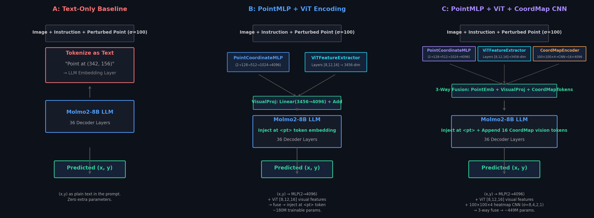
Claim: the main gain comes from grounding perturbed coordinates in visual features.
A text-only correction learns the wording but cannot reliably bind the perturbed point to image evidence. B injects a learned point embedding plus ViT features and gives the core gain. C adds a coordinate map, which mostly helps Spatial but has lower ROI.
Ablation: text-only is insufficient
Same correction task, but B injects point + visual features instead of relying on text coordinates.
Where B helps most
Point-conditioned visual features help multi-point perception and spatial-semantic reasoning.
C is useful, but targeted
CoordMap mainly contributes dense spatial context; Reasoning is slightly better with B.
Core ABC Ablation
| Module | Point Representation | Overall | Counting | Reasoning | Spatial | Interpretation |
|---|---|---|---|---|---|---|
| A | text-only coordinates | 72.3% | 61.7% | 72.5% | 80.0% | weak binding between text coords and image features |
| B | PointMLP + ViT features | 75.5% | 68.9% | 79.8% | 79.0% | best cost/performance point encoding |
| C | B + CoordMap CNN | 77.0% | 69.9% | 79.3% | 82.6% | best final score; Spatial-specific gain |
Detailed ABC Evidence and Failure Analysis ablation + attribution
Correction Rounds: Iteration Is Not the Main Source of Gain
| Architecture | R0 Best | R1 Best | R2 Best | Best Round | Observed Effect |
|---|---|---|---|---|---|
| A Text-only | 72.3% | 72.2% | 72.0% | R0 | late training improves text-only but remains below B/C |
| B PointMLP+ViT | 75.5% | 75.5% | 75.5% | R0/R1/R2 tie | point encoding already resolves most correction signal |
| C +CoordMap | 77.0% | 75.5% | 76.7% | R0 | CoordMap is strongest early; extra rounds slightly decay |
B vs C ROI
| Metric | B Best | C Best | C Gain |
|---|---|---|---|
| Overall | 75.5% | 77.0% | +1.5 |
| Counting | 68.9% | 69.9% | +1.0 |
| Reasoning | 79.8% | 79.3% | -0.5 |
| Spatial | 79.0% | 82.6% | +3.6 |
| Steerability | 61.5% | 62.5% | +1.0 |
Training Objective Diagnosis
| Signal | Step 2000 | Step 20000 | What It Shows |
|---|---|---|---|
| Total CE | 0.6235 | 0.5474 | loss keeps falling |
| Overall eval | 73.42% | 73.01% | metric does not rise |
| Coord loss share | 91.19% | 95.38% | coordinates dominate errors |
| Label loss | 0.5425 | 0.1757 | text label already learned |
| Coord ones loss | 2.1359 | 2.0295 | fine digits remain hard |
SinglePOS Negative Control
| Encoding | Format | Best Overall | Counting | Status | Lesson |
|---|---|---|---|---|---|
| Baseline D | Molmo2 HTML continuous coords | 73.42% | 67.3% | stable | keep native coordinate protocol |
| singlepos original | N POS_x POS_y... | 64.56% | 40.8% | learns slowly | discrete tokens need strong structure |
| singlepos_long | POS_x POS_y... | 13.95% | 1.5% | failed | no count prefix breaks structure |
| legacy_long | 1 x y 2 x y... | 56.11% -> 13.24% | 32.1% -> 0.5% | epoch-2 collapse | sequence can loop without total count |
| count_long | N 1 x y 2 x y... | 14.66% | 2.6% | failed | extra structure dilutes POS learning |
Multi-Expert Routing
Claim: the final score is the end of a proof chain, not a single checkpoint.
The reports break into three evidence types. Ablations show which module removes which failure mode. Parameter sweeps only tune how much signal each module gets. Negative controls reject simpler substitutes. The final ensemble wins because it routes each category to the expert that matches its error pattern.
Audited pools feed balanced runs
The cloud inventory has 53,772 unique sample IDs and 37,574 trainable rows. The 3,815-row set is only the early semantic baseline subset.
ABC fixes coordinate-image binding
Text-only A underperforms. B gets the core gain from PointMLP + ViT. C mostly buys Spatial, so B is the better ROI while C is the higher ceiling.
AttnRes only helps at the right weight
n=2 is the sweet spot. n=1 underuses the module and n=4 overfits. That makes AttnRes a targeted fix for anchor-relative Steerability, not a universal backbone.
Category experts win
Affordance C 93.94, Counting C 70.41, Reasoning B 78.24, Spatial C 82.56, Steerable AttnRes 63.00. These are local expert-selection scores; the final overall is the submitted benchmark score.
Proof Table 1: Data Base Before Model Changes
Funnel view: cloud inventory first, experiment subsets second
The 3,815-row bar is a deliberate early semantic subset, not the total data volume. Later D-format and steerability runs resample larger balanced subsets from the audited cloud pools.
| Evidence | Count | Operation | Mark | Analysis |
|---|---|---|---|---|
| Processed cloud outputs | 55,372 | merge Gemini + Qwen + SAM-clean batches | cloud pool | shows the full multi-batch inventory, not only the early filtered-data run |
| Unique sample IDs | 53,772 | deduplicate repeated workflows | clean base | removes repeated attempts before counting usable samples |
| Trainable completed rows | 37,574 | latest judgement completed/accepted | module output | usable rows available before experiment-specific balancing |
| Early Gemini trainable rows | 24,415 | semantic cache only | early pool | valid for the original Pipeline A baseline, not the full server count |
| Early FT subset | 3,815 | 763 per category x 5 | early balance | small controlled subset used for the early semantic comparison |
Attribution: the data module is not just more rows. The full cloud pool provides 37,574 trainable rows; the 3,815-row set is a deliberately balanced early subset where Spatial's 763 eligible examples define the quota.
Proof Table 2: Module Ablation, Not Hyperparameter Tuning
Overall ablation: A to B is the core jump
B vs A is the module proof (+3.2pp). C vs B is a smaller, targeted spatial refinement (+1.5pp).
Where the gain comes from
The biggest jumps are Counting and Reasoning from visual point grounding; CoordMap mainly helps Spatial.
| Module | Representation | Overall | Afford. | Counting | Reason. | Spatial | Steer. | Mark | Analysis |
|---|---|---|---|---|---|---|---|---|---|
| A | text-only coordinates | 72.3% | 90.9% | 61.7% | 72.5% | 80.0% | 61.5% | baseline | wording can be learned, but coordinate-image binding is weak |
| B | PointMLP + ViT | 75.5% | 93.9% | 68.9% | 79.8% | 79.0% | 61.5% | core ablation | main gain comes from point-conditioned visual grounding |
| C | B + CoordMap CNN | 77.0% | 94.4% | 69.9% | 79.3% | 82.6% | 62.5% | targeted boost | best final score, but its distinctive value is Spatial |
Attribution: B over A is the strongest module proof: Counting +7.2pp and Reasoning +7.3pp indicate that visual point features solve a grounding problem. C is still useful, but its extra value is concentrated in Spatial (+3.6pp), so the page should describe C as targeted rather than universally better.
Proof Table 3: AttnRes Architecture and Steerable Weight Sweep
Default vs AttnRes by steerable weight
Only n=2 is the clean architecture proof: same data weight, AttnRes +4.0pp over default.
Interpretation of the sweep
The sweep is not just ranking models; it explains the usage rule: enough steerable data for AttnRes, but not repeated to saturation.
| Steerable Weight | Default Best | Default Step | AttnRes Best | AttnRes Step | Winner | Evidence Type | Interpretation |
|---|---|---|---|---|---|---|---|
| n=1 / 2,536 steer | 62.5% | 2k | 60.0% | 18k | Default +2.5 | boundary | too little steerable signal underuses AttnRes |
| n=2 / 5,072 steer | 59.5% | 10k | 63.5% | 14k | AttnRes +4.0 | architecture proof | same data weight, cross-block residual attention wins |
| n=4 / 10,000 steer | 60.0% | 14k | 58.0% | 2k | Default +2.0 | overfit boundary | repetition hurts generalization and narrows the useful regime |
Attribution: AttnRes should be claimed narrowly. The n=2 row proves the architecture helps anchor-relative Steerability; n=1 and n=4 explain why it must be paired with the right data weight and early stopping.
Proof Table 4: Negative Controls and Failure Attribution
Rejected shortcuts
Prompt-only and token-format shortcuts do not explain the final gain; most remain below the trained modules.
Counting error anatomy @ ckpt-2000
Counting fails structurally: wrong number of points and mask misses dominate; parser failures are small.
| Test | Best / Key Result | Counting | Steer. | Mark | What It Rules Out | What It Proves |
|---|---|---|---|---|---|---|
| Prompt metadata A-F | D = 71.69%, C = 71.38% | 66.84% | 50.5% | small delta | prompt-only coordinate injection is not enough | training modules are needed, not just coordinate wording |
| SinglePOS original | 64.56% | 40.8% | 53.0% | negative control | discrete POS tokens do not solve coordinates by themselves | output structure and coordinate grounding remain bottlenecks |
| SinglePOS failed variants | 13.95% / 14.66% | 1.5% / 2.6% | 12.5% / 13.0% | collapse | format changes can collapse parsing and point count | native Molmo2 coordinate protocol is safer |
| Loss diagnosis | CE 0.6235 -> 0.5474, eval 73.42 -> 73.01 | loss highest 0.6200 | label loss near 0 | metric gap | lower token CE does not imply better mask accuracy | coordinate digits dominate 91-95% of supervised CE |
| Counting error anatomy | 132/196 success | 50 wrong count, 44 out mask | N/A | routing cause | errors are not mainly parser failures | Counting needs a category expert for multi-point structure |
Attribution: the negative controls prevent overclaiming. The method advantage is not from a lucky prompt or a coordinate-token trick; it comes from modules that match the real failure modes.
Data module
LLM cleaning, local filtering, steerable synthesis, and balanced resampling lift semantic categories before model specialization.
ABC module
Point-conditioned visual features recover coordinate grounding. B is the best ROI point; C is the best Spatial point.
Negative controls
Prompt-only changes buy little. Discrete POS variants mostly fail. The 82.65% Counting number is valid-output rate, not mask accuracy.
Final Routing Chart: Category Experts
Per-category expert accuracy
These category bars are local validation evidence for choosing experts. The official submitted overall score is reported separately as 77.2%.
| # | Category | Expert | Accuracy | Why This Expert | Mark |
|---|---|---|---|---|---|
| 1 | Affordance | C | 93.94% | C keeps the highest semantic grounding score | route |
| 2 | Counting | C | 70.41% | multi-point structure benefits from visual + CoordMap grounding | route |
| 3 | Reasoning | B | 78.24% | B has better ROI and avoids C's slight Reasoning drop | B wins |
| 4 | Spatial | C | 82.56% | CoordMap's clearest gain is Spatial +3.6pp over B | C wins |
| 5 | Steerable | AttnRes | 63.00% | anchor-relative reasoning needs cross-block state flow | AttnRes |
Official submitted overall: 77.2%
Category values above are local validation scores used for routing, not a re-summed 982-sample ensemble.
Complete Evolution: What Each Stage Adds
Overall progression
The final gain is not monotonic in every category. Pipeline A improves semantic categories but hurts Counting/Steer; later modules recover hard categories, then routing selects per-category experts.
| Experiment | Afford. | Spatial | Reason. | Count. | Steer. | Overall | Analysis |
|---|---|---|---|---|---|---|---|
| Molmo2 (0-shot) | 85.9% | 76.9% | 77.2% | 73.0% | 50.5% | 72.7% | strong base, but Steerability is the first clear bottleneck |
| + Pipeline A | 93.9% | 83.1% | 82.9% | 67.3% | 49.5% | 75.3% | data synthesis improves semantic pointing but does not solve hard structured categories |
| + IterCorr B | 93.9% | 79.0% | 79.8% | 68.9% | 61.5% | 75.5% | point-conditioned visual grounding recovers Steerability and improves coordinate binding |
| Final Submission | 93.9% | 82.6% | 78.2% | 70.4% | 63.0% | 77.2% | official overall score; category cells show local expert-selection evidence |
Detailed Diagnostics by Evidence Type supporting evidence
Cloud Data Inventory Behind the Training Sets
| Stage | Count | Filter / Module | Role |
|---|---|---|---|
| Processed outputs | 55,372 | Gemini + Qwen + SAM-clean cache | full audited cloud inventory |
| Unique sample IDs | 53,772 | latest-workflow selection | deduplicate repeated processing roots |
| Trainable completed rows | 37,574 | completed / accepted latest judgement | usable pool before experiment balancing |
| Early Gemini cache | 24,415 | semantic LLM pass only | source for the original filtered-data baseline |
| Early balanced subset | 3,815 | 763 per category x 5 | controlled semantic LoRA comparison |
Category Balancing: Why the Selector Matters
| Category | Eligible | Selected | Dropped | Why It Matters |
|---|---|---|---|---|
| Affordance | 1,778 | 763 | 1,015 | avoid overfitting easy category |
| Counting | 12,895 | 763 | 12,132 | massive raw skew needs quota control |
| Object Reference | 4,224 | 763 | 3,461 | keeps semantic pointing balanced |
| Reasoning | 2,478 | 763 | 1,715 | preserve harder cognitive tasks |
| Spatial Relation | 763 | 763 | 0 | scarce class defines the quota |
Final source mix: 3,715 pixmo_points + 100 where2place. Robopoint was abundant but not selected after balancing.
Filtered-Data FT Grid: Best Runs
| Run | LR / GA | Best Step | Overall | Afford. | Spatial | Reason. | Steer. | Counting | Invalid |
|---|---|---|---|---|---|---|---|---|---|
| lr1e4_ga16 | 1e-4 / 16 | 2000 | 75.25% | 93.94% | 83.08% | 82.90% | 49.5% | 67.35% | 9 |
| lr2e4_ga16 | 2e-4 / 16 | 2000 | 74.85% | 90.91% | 81.54% | 78.24% | 54.0% | 69.90% | 4 |
| lr1e4_ga8 | 1e-4 / 8 | 2000 | 73.83% | 93.43% | 83.08% | 76.17% | 52.0% | 64.80% | 7 |
| lr2e4_ga8 | 2e-4 / 8 | 2000 | 14.87% | 31.82% | 16.92% | 10.88% | 12.5% | 2.04% | 103 |
Higher LR with GA=8 collapses output format; stable LoRA needs the larger effective batch.
Prompt-Only Metadata Injection: Limited Gain
| Variant | Coordinate Prompt | Overall | Steer. | Invalid | Conclusion |
|---|---|---|---|---|---|
| A | natural-language pixel coords | 69.55% | 40.5% | 1 | extra wording hurts Steerability |
| B | natural language + Molmo2 HTML | 69.04% | 38.0% | 1 | format match alone is insufficient |
| C | none | 71.38% | 49.5% | 1 | baseline prompt |
| D | direct legacy coordinate list | 71.69% | 50.5% | 3 | only prompt variant above no-injection |
| E | bare HTML points tag | 68.33% | 34.5% | 2 | empty tag disrupts generation |
| F | normalized bracket list | 70.57% | 45.5% | 1 | still below D/no-injection |
Prompt engineering cannot replace the training modules; direct D format is the only useful metadata prompt.
Counting Error Anatomy
| Metric @ ckpt-2000 | Value |
|---|---|
| Counting samples | 196 |
| Success | 132 / 196 = 67.35% |
| Wrong number of points | 50 / 196 = 25.51% |
| At least one point out of mask | 44 / 196 = 22.45% |
| Correct count but out of mask | 14 / 146 = 9.59% |
| Wrong count and out of mask | 30 / 50 = 60.00% |
| Invalid parse | 5 / 196 = 2.55% |
Counting failures are mostly structured multi-point mistakes, not only parsing errors.
Counting-Specialized Model
| Setting | Value |
|---|---|
| Architecture | AttnRes + C wrapper |
| Balance | Counting x2, others x1 |
| Train data | 18,516 samples |
| Best checkpoint | ckpt-1000 |
| Counting valid output | 162 / 196 = 82.65% |
| Wrapper params | PointMLP + ViT + CoordMap CNN |
| Use in story | format diagnostic, not accuracy |
Source: model_handover_AttnRes_n2.md and SUBMISSION_REPORT.md. The 82.65% value is valid-output rate; its Counting accuracy was lower than the C route's 70.41%.
Checkpoint Timing: Early Stop Beats Longer Training
| Run / Model | Early Best | Late Score | Loss Trend | Lesson |
|---|---|---|---|---|
| lr1e4_ga16 | 75.25%@2k | 69.65%@16k | train loss 0.553 -> 0.311 | eval overfits while CE falls |
| output_D_lr2e4_ga16 | 73.42%@2k | 73.01%@20k | CE 0.6235 -> 0.5474 | digit loss drop does not equal mask accuracy |
| ABC-C | 77.0%@2k R0 | 73.8%@20k R0 | extra CoordMap peaks early | select early checkpoint for final expert |
| AttnRes_n2 | 63.5%@14k | 60.0%@20k | post-peak decline | Steerability needs category-specific early stop |